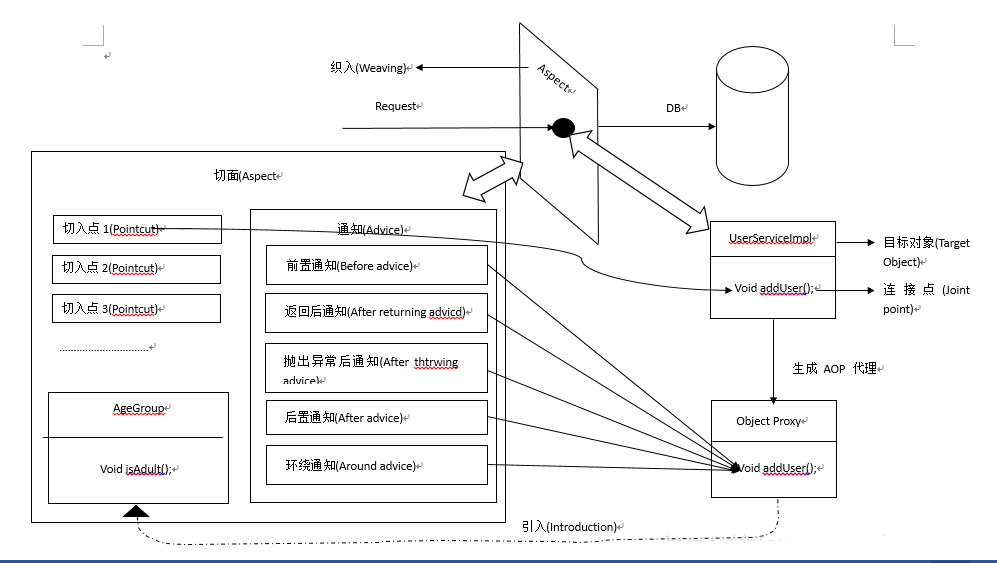

一 SpringAOP简介：
面向切面编程（Aspect Oriented Programming）提供了另一种角度来思考程序的结构，通过这种方式弥补面向对象编程(Object Oriented Programming)的不足。除了类以外，AOP提供了切面，切面对关注点进行模块化，例如横切多个类型和对象的事务管理（这些关注点术语通常称作横切(crosscutting)关注点）。Spring AOP是Spring的一个重要组件，但是Spring IOC并不依赖于Spring AOP，这意味着你可以自由选择是否使用AOP，AOP提供了强大的中间件解决方案，这使得Spring IOC更加完善。我们可以通过AOP来实现日志监听，事务管理，权限控制等等。
二 AOP概念：
切面（Aspect）：一个关注点的模块化，这个关注点可能会横切多个对象。事务管理是Java应用程序中一个关于横切关注点的很好的例子。在Spring AOP中，切面可以使用通过类（基于模式（XML）的风格）或者在普通类中以@Aspect注解（AspectJ风格）来实现。
连接点（Join point）：程序执行过程中某个特定的点，比如某方法调用的时候或者处理异常的时候。在Spring AOP中一个连接点总是代表一个方法的执行。说人话就是AOP拦截到的方法就是一个连接点。通过声明一个org.aspectj.lang.JoinPoint类型参数我们可以在通知(Advice)中获得连接点的信息。这个在稍后会给出案例。
通知(Advice)：在切面（Aspect）的某个特定连接点上（Join point）执行的动作。通知的类型包括”around”，”before”，”after”等等。通知的类型将在后面进行讨论。许多AOP框架，包括Spring 都是以拦截器作为通知的模型，并维护一个以连接点为中心的拦截器链。总之就是AOP对连接点的处理通过通知来执行。个人理解：Advice指当一个方法被AOP拦截到的时候要执行的代码。
切入点（Pointcut）：匹配连接点（Join point）的断言。通知（Advice）跟切入点表达式关联，并在与切入点匹配的任何连接点上面运行。切入点表达式如何跟连接点匹配是AOP的核心，Spring默认使用AspectJ作为切入点语法。个人理解：通过切入点的表达式来确定哪些方法要被AOP拦截，之后这些被拦截的方法会执行相对应的Advice代码。引入（Introduction）：声明额外的方法或字段。Spring AOP允许你向任何被通知(Advice)对象引入一个新的接口（及其实现类）。个人理解：AOP允许在运行时动态的向代理对象实现新的接口来完成一些额外的功能并且不影响现有对象的功能。
目标对象（Target object）：被一个或多个切面（Aspect）所通知（Advice）的对象，也称作被通知对象。由于Spring AOP是通过运行时代理实现的，所以这个对象永远是被代理对象。个人理解：所有的对象在AOP中都会生成一个代理类，AOP整个过程都是针对代理类在进行处理。
AOP代理（AOP proxy）：AOP框架创建的对象，用来实现切面契约（aspect contract）（包括通知方法执行等功能），在Spring中AOP可以是JDK动态代理或者是CGLIB代理。
织入（Weaving）：把切面（aspect）连接到其他的应用程序类型或者对象上，并创建一个被通知对象。这些可以在编译时（例如使用AspectJ编译器），类加载时和运行时完成。Spring和其他纯AOP框架一样，在运行时完成织入。个人理解：把切面跟对象关联并创建该对象的代理对象的过程。
三 通知(Advice)的类型：
- 前置通知（Before advice）：在某个连接点（Join point）之前执行的通知，但这个通知不能阻止连接点的执行（除非它抛出一个异常）。
- 返回后通知（After returning advice）：在某个连接点（Join point）正常完成后执行的通知。例如，一个方法没有抛出任何异常正常返回。
- 抛出异常后通知（After throwing advice）：在方法抛出异常后执行的通知。
- 后置通知（After（finally）advice）：当某个连接点（Join point）退出的时候执行的通知（不论是正常返回还是发生异常退出）。
- 环绕通知（Around advice）：包围一个连接点（Join point）的通知，如方法调用。这是最强大的一种通知类型。环绕通知可以在方法前后完成自定义的行为。它也会选择是否继续执行连接点或直接返回它们自己的返回值或抛出异常来结束执行。
四 流程图

五 实现AOP的方法
(一) 基于xml的实现
- bean交给IOC容器，xml或注解
1. 前置通知
1 | import java.lang.reflect.Method; |
2. 返回后通知
1 | import java.lang.reflect.Method; |
3. 抛出异常后通知
1 | import java.lang.reflect.Method; |
4. 环绕通知
1 | import org.aopalliance.intercept.MethodInterceptor; |
(二) 基于注解的实现
六 一些参数、配置的解释
(一) expression=” “
aop:pointcut”标签中”expression”的写法规则如下：
- execution(modifiers-pattern? ret-type-pattern declaring-type-pattern? name-pattern(param-pattern) throws-pattern?)ret-type-pattern,name-pattern(param-pattern)是必须的.
- ret-type-pattern:标识方法的返回值，需要使用全路径的类名如java.lang.String,也可以为*表示任何返回值；
- name-pattern:指定方法名,代表所有,例如set,代表以set开头的所有方法.
- param-pattern:指定方法参数(声明的类型),(..)代表所有参数,()代表一个参数,(,String)代表第一个参数为任何值,第二个为String类型.
表达式例子如下：
- 任意公共方法的执行： execution(public * *(..))
- 任何一个以“set”开始的方法的执行： execution(* set*(..))
- AccountService 接口的任意方法的执行： execution(* com.xyz.service.AccountService.*(..))
- 定义在service包里的任意方法的执行： execution(* com.xyz.service..(..))
- 定义在service包和所有子包里的任意类的任意方法的执行： execution(* com.xyz.service...(..))
- 定义在pointcutexp包和所有子包里的JoinPointObjP2类的任意方法的执行： execution(* com.test.spring.aop.pointcutexp..JoinPointObjP2.*(..))”)
在多个表达式之间使用 ||,or表示 或，使用 &&,and表示 与，！表示 非.例如：
1
2
3
4<aop:config>
<aop:pointcut id="pointcut" expression="(execution(* com.ccboy.dao..*.find*(..))) or (execution(* com.ccboy.dao..*.query*(..)))"/>
<aop:advisor advice-ref="jdbcInterceptor" pointcut-ref="pointcut" />
</aop:config>
(二) JoinPoint 对象
- JoinPoint对象封装了SpringAop中切面方法的信息,在切面方法中添加JoinPoint参数,就可以获取到封装了该方法信息的JoinPoint对象.
常用api:
| 方法名 | 功能 |
|---|---|
| Signature getSignature(); | 获取封装了署名信息的对象,在该对象中可以获取到目标方法名,所属类的Class等信息 |
| Object[] getArgs(); | 获取传入目标方法的参数对象 |
| Object getTarget(); | 获取被代理的对象 |
| Object getThis(); | 获取代理对象 |
| 2. ProceedingJoinPoint对象是JoinPoint的子接口,该对象只用在@Around的切面方法中, 添加了: | |
| + Object proceed() throws Throwable //执行目标方法 | |
| + Object proceed(Object[] var1) throws Throwable //传入的新的参数去执行目标方法两个方法. |